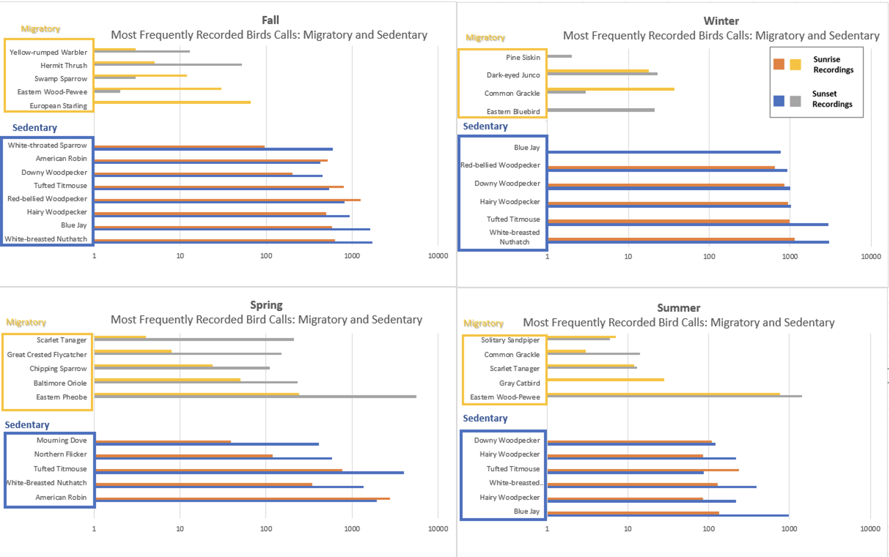

Applications of Conservation Technology for Assessing Broad Meadow Brook Wetlands
Emerging Technology in Conservation -2023 Fall
Final Project - Biodiversity Part
Lara Jordan, Yu-Yun Ruan, Finnegan Wertz
Introduction
This report highlights collaborative initiatives spearheaded by Mass Audubon and its partners to restore a wetland within Broad Meadow Brook, New England's largest urban wildlife sanctuary. The restoration project is centered on the creation of a self-sustaining native riparian and wetland ecosystem, with a focus on improving climate resilience and water quality. Key components of the project involve decommissioning an outdated sewer line and the restoration of natural stream channels. Additionally, the report emphasizes the assessment of biodiversity, wetland extent, and their interconnectedness with environmental factors.
To determine the number of bird calls and identify the corresponding bird species over a year, we employed the BirdNET analyzer—an AI software adept at species identification through bird calls. We utilized the Birdnetlib, a Python API from BirdNet, to analyze over 8000 sound records from July 2022 to June 2023. Furthermore, our objective was to establish correlations between our species identifications and the Acoustic Diversity Index and NDVI (Normalized Difference Vegetation Index).
Result

Conclusion
Birds are either migratory or sedentary, depending on where they spend their winter. In Central Massachusetts, Black Capped-Chickadees, Blue Jays, Northern Cardinals, Morning Doves, and Crows are historically resident birds in the region. Our recorder in the woods of Broadmeadow Brook allowed us to verify if there are any new sedentary birds or if any typically sedentary birds need to be added.
In Winter, White-Breasted Nuthatches, Tufted Titmice, Woodpeckers, and Blue Jays were the key species in Broadmeadow Brook. As temperatures warm and leaves bud in the early spring, American Robins, Eastern Phoebes, and Baltimore Orioles arrive back in the area. Migratory birds tend to travel by families and come in waves.
From these recordings, we also calculated Acoustic Indices. Acoustics Indicies look at the entire range of sounds, from low rumblings of distant trucks to high-pitched bug sounds beyond human hearing. By looking at these, we can better understand Broadmeadow Brook's full range of biodiversity, including anthropogenic sounds.